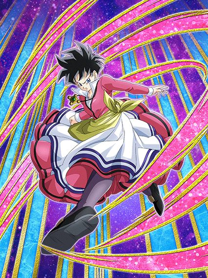

BROLY INT LR

Como mata esse personagem mesmo?
Ao contrário de todos os outros Brolys, esse Broly não é uma máquina insana de dano, e sim um tank suporte essencialmente invencível
Esse cara é lider pra nova categoria Uncontrollable Power, que é meio zuada mas tem opções interessantes
E ele já começa a luta dando 40% de DEF pra Extreme Class por 4 turnos KKKKKKKKK
O Broly tem 60% de redução de dano pra sempre, sempre cura HP (independente da orb que você pegar), e a partir do turno 5 ele protege o time inteiro com um revive
Ele ainda tem um domínio que pode ser ativado a qualquer hora se todos aliados forem Uncontrollable Power, e enquanto o domínio estiver aberto, ele tem defesa ativa e buffa a categoria ainda mais
Depois de ele atacar no domínio, ele fica super efetivo pro resto da luta, o que é bem útil
E caso você consiga reviver, o Broly simplesmente passa a dar 60% de ATK e DEF pra Uncontrollable Power KKKKKKKKKKKKKK
Apesar de o foco dele ser o suporte e tankagem, ele consegue sim dar um dano muito competente
Em geral, um faz-tudo Extreme Class que ajuda muito os vilões.
Videl TEQ

Uhhhhh ela é um card diferente em cada slot?
Essa Videl tem a arte e animações boas, mas o kit dela é meio bagunçado..
Pra começar, ela tem 30% de chance de desvio sempre.. mas aí coisas acontecem dependendo do slot que ela tá
Basicamente, no slot 1 ela é completamente inútil, não coloque ela lá.
No slot 2, ela dá 40% de ATK e DEF pra Dragon Ball Seekers e Earth-Bred Fighters, além de ganhar 20% de redução de dano por ataque feito no turno
No slot 3, o suporte dela aumenta pra 60% e ela ganha 20% de chance de desvio por ataque feito no turno ao invés da redução de dano
O único problema desse rolê dos ataques por turno é que ela não tem nenhum adicional nem nada na passiva, o que significa que você está completamente dependente do adicional do Hidden Potential, o que é bem triste
Sim, se você conseguir, dá pra chegar até 70% de chance de desvio, o que é bom
Mas é completamente aleatório, ela é parecida com a Mai STR do ano passado..
GOHAN CARNIVAL STR
")
Se eu ganhasse uma moeda a cada vez que um Gohan STR LR fosse um dos melhores cards do jogo..
Esse cara builda +200% de ATK e 150% de DEF atacando 5 vezes, e ele tem vários adicionais na passiva
Um adicional com 70% de chance de ser Super se estiver com 18 de Ki, um Super adicional se estiver com 24 de Ki, e ainda tem o adicional do Hidden Potential
E o dano dele é completamente explosivo, mesmo que ele não stacke nada, já que cada super que ele faz no turno aumenta o ATK em 77% temporariamente, super balanceado né
Além disso, ele ganha defesa ativa se tiver um Earth-Bred Fighters ou Kamehameha no turno com ele, e se o HP cair abaixo de 77%, ele ganha 50% de chance de desvio pq sim, balanceado.
Esse cara no slot 2 ou 3 cozinha tranquilamente, tendo níveis decentes de defesa e um dano completamente absurdo
E a partir do terceiro turno do Gohan, ele já pode usar a Standby, uma condição fácil mais uma vez ein
")
O dano.
O Gohan não pode atacar mas vira uma parede, ganhando 77% de redução de dano forem Super Class e ainda tem defesa ativa
Além disso, ele ainda ganha +50% de DEF por orb pega no turno, podendo tankar basicamente qualquer Super do jogo inteiro 💀
Bom, sobre a Standby em si, o Gohan aleatoriamente coloca 7 esferas do dragão nas orbs
Coletando o orb, você coleta a esfera junto, então é bem simples
Cada orb pega aumenta 1 carga e cada esfera do dragão aumenta em 4 cargas
Pegando as 7 esferas e pelo menos 35 cargas, você tem a melhor animação do jogo

Só pra constar, essa standby é a primeira do jogo a ter dano super efetivo, não necessitando de ficar rezando por um crítico ou precisando do suporte da Bulma LR
Em geral, personagem desbalanceado e forte pra caramba, clássico momento Gohan.